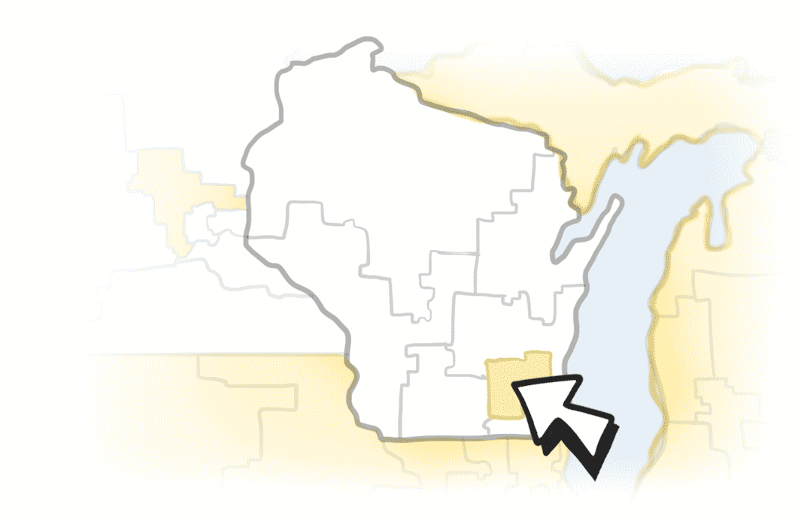

Select by State:
The Town Hall Project is an amazing, volunteer-powered, grassroots effort that empowers constituents across the country to have face-to-face conversations with their elected representatives.
Select a highlighted district to view when and where represenatives from that area are holding meetings.
Learn more and submit events at the Town Hall Project.